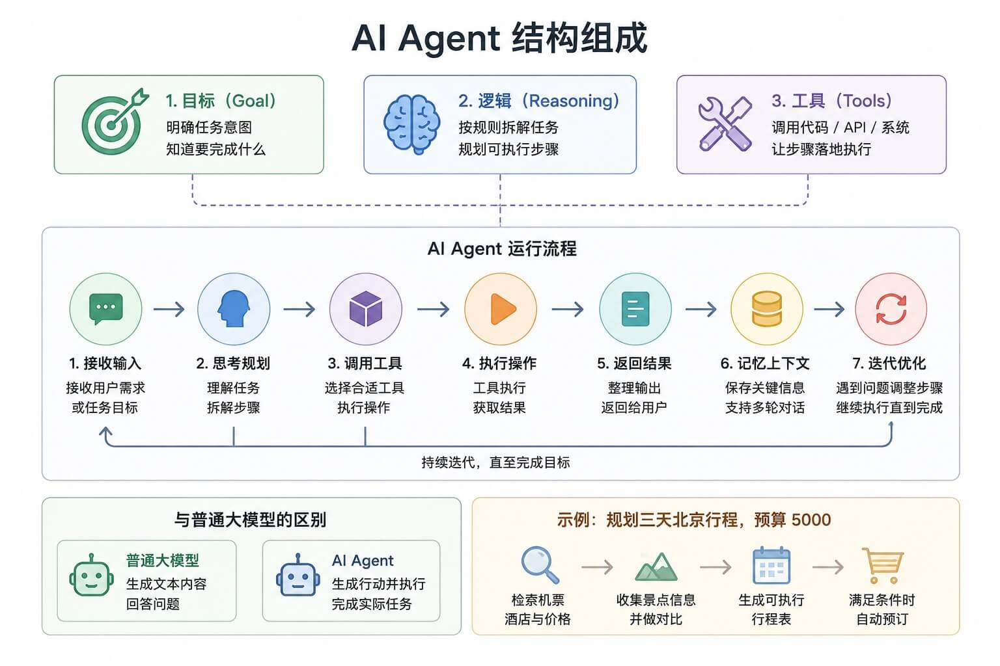

AI Agent（エージェント）
あなたはこういったやり取りに慣れているかもしれません。質問すると、AI が答えを返す。
-
あなたが記事を書いてと頼めば、AI は記事を書きます。
-
あなたが一文を翻訳してと頼めば、AI は一文を翻訳します。
このモードでは、AI はどちらかというとアドバイザーです。アドバイスはしてくれますが、直接は行動しません。
しかし、タスクがもう少し複雑になるとどうでしょうか？ 例えば：「明日の北京の天気を調べて、気温が25度を超えていたら、予算300元以内の半袖シャツを勧めて、結果をメールにまとめて上司に送って」というような。
普通の対話型 AI を使う場合、いくつかのステップに分ける必要があります。
-
ステップ1：明日の北京の天気を調べる。
-
ステップ2：25度を超えていたら、300元以内の半袖シャツを勧める。
-
ステップ3：上司に送るメールを書く。内容は……。
各ステップを手動で進める必要があります。
而 AI Agent（エージェント）の考え方は、あなたが「これをやって」と一度言うだけで、AI 自身が残りをすべてやり遂げる、というものです。
それは、何をする必要があるか、どのツールを呼び出すか、どの順序で実行するか、問題に直面したときにどう調整するかを自動的に判断し、タスクが完了するまで実行します。

簡単に言えば、通常の LLM は参謀であり、あなたの計画を手助けします。AI Agent は実行者であり、目標を受け取ったら自らタスクを遂行します。
AI Agent とは
AI Agent は、環境を知覚し、意思決定を行い、行動を起こす自律システムです。
もう少し学術的な定義は次の通りです。Agent とは、ある環境の中に存在する実体であり、センサーを通じて環境を知覚し、アクチュエータを通じて環境に働きかけることで、一連の目標を達成するものです。。
この定義は少し抽象的ですね。もっとわかりやすい言葉で分解してみましょう。
Agent vs 通常の LLM
まず比較表を見てみましょう。
| 特性 | 通常の LLM | AI Agent |
|---|---|---|
| 対話モード | 一問一答、ユーザー駆動 | 自律実行、目標駆動 |
| 能力の境界 | モデル内蔵の能力のみ | ツールで能力を拡張可能 |
| 記憶 | 会話コンテキスト（有限） | 短期 + 長期記憶 |
| 計画 | なし（またはユーザーの誘導が必要） | 自律的なタスク分解と計画 |
| フィードバックループ | なし（単回生成） | 観察・思考・行動のループ |
具体的な例を挙げます：「明日の上海から北京への航空券を、価格1500元以内で予約して。」
通常の LLM は次のように答えるかもしれません。「はい、航空券を検索するコードを書いたり、どのサイトで検索すべきかをお伝えすることはできます。」しかし、実際に航空券を検索することはなく、ましてや予約をしてくれることもありません。
一方、一人前の Agent は次のように行動します。
-
1. 目標を理解する：明日の上海→北京、1500元以内の航空券を予約する。
-
2. 行動を決定する：航空券検索 API を呼び出す必要がある。
-
3. 行動を実行する：API を呼び出して、フライトリストを取得する。
-
4. 結果を観察する：10件のフライトを取得し、そのうち3件が1500元以内。
-
5. 再び思考する：どれを選ぶ？ 発着時間をもう少し調べるか、ユーザーの好みを尋ねる必要があるかもしれない。
-
6. 行動を続ける：別の API を呼び出して定時運航率を調べるか、ユーザーに選択肢を直接推薦する。
-
7. タスクを完了する：ユーザーの座席を確保し、注文リンクを生成する。
違いがわかりましたか？通常の LLM は答えを提供し、Agent は結果を提供する。
Agent の核となる能力
完全な Agent は通常、以下の3つの核となる能力を備えています。
| 能力 | 説明 | たとえ |
|---|---|---|
| 知覚（Perception） | 環境情報とフィードバックを取得する | 目、耳 |
| 意思決定（Decision） | 何をするか、どうするかを考える | 頭脳 |
| 行動（Action） | 具体的な操作を実行する | 手、足 |
-
知覚とは、Agent が何が起こっているかを把握できることを意味します。例えば、ユーザーがメッセージを送信する、API が結果を返す、ファイルシステムに新しいファイルが追加される——これらはすべて知覚の入力です。
-
意思決定とは、Agent が知覚した情報に基づいて、次に何をするかを決定することです。ユーザーに直接答えるべきか？ ツールを呼び出す必要があるか？ 大きなタスクを小さなタスクに分解する必要があるか？ これらはすべて意思決定です。
-
行動とは、Agent が実際に意思決定を実行することです。検索 API の呼び出し、ファイルの読み取り、メールの送信、データベースの操作——これらはすべて行動です。
Agent の基本アーキテクチャ
では、Agent の標準的な「4つのピース」を見ていきましょう：頭脳、ツール、記憶、計画。
まずアーキテクチャ図を見てみましょう。

頭脳：推論コアとしての LLM
Agent の頭脳は通常、GPT-4、Claude、Llama などの大規模言語モデルです。
この LLM は次の役割を担います：
-
1. ユーザーの意図を理解する：ユーザーが「予約して」と言ったとき、本当に望んでいることは何か？
-
2. 意思決定を行う：次に何をすべきか？
-
3. ツール呼び出しのパラメータを生成する：航空券検索 API を呼び出すには、どのようなパラメータが必要か？
-
4. 最終回答をまとめる：情報収集は十分だ。ユーザーにわかりやすい要約をどう提供するか？
LLM は Agent の中核ですが、すべてではありません。人間の脳が重要である一方で、物事を行うには手と足も必要なのと同じです。
ツール：AI の能力の境界を広げる
ネイティブ LLM には2つの明らかな限界があります。
-
1. 知識のカットオフ：訓練終了後に起こったことを知らない。
-
2. 相互作用ができない：ファイルを直接読んだり、データベースを検索したり、API を呼び出したりできない。
ツール（Tools）は、これらの問題を解決するためのものです。
よくあるツールの種類：
| ツールの種類 | 用途 | 例 |
|---|---|---|
| 検索ツール | 最新情報を取得する | Google Search、Bing Search |
| 計算ツール | 数学的な計算を行う | 電卓、Wolfram Alpha |
| ファイル操作 | ローカルファイルの読み書き | PDF の読み取り、CSV の書き込み |
| API 呼び出し | 外部システムとやり取りする | 航空券の予約、メール送信、天気の確認 |
| データベースクエリ | 構造化データの格納・取得 | SQL クエリ、ベクトル検索 |
| コード実行 | コードを実行して問題を解決する | Python REPL、Jupyter |
Agent にツールを与えることは、人にコンピューターを与えるようなものです。考えるだけだったのが、すぐに実行できるようになります。
記憶：短期 vs 長期記憶
LLM は本来、記憶喪失です。毎回の会話は新しいものであり、コンテキストを詰め込まない限り、以前のことは覚えていません。
一方、Agent は多くのことを覚えておく必要があります：
短期記憶：さっきユーザーは何と言ったか？ 前のステップでどのツールを呼び出したか？ どのような結果を得たか？
-
長期記憶：ユーザーの好みは？過去の類似タスクはどう処理されたか？どんな教訓があったか？
記憶システムの一般的な実装方法：
| 記憶の種類 | 保存内容 | 実装方法 |
|---|---|---|
| 短期記憶 | 現在のセッションの会話履歴、中間ステップ | LLM のコンテキストウィンドウに直接入れる |
| 長期記憶 | ユーザーの好み、履歴タスク、知識ドキュメント | ベクトルデータベース + 類似度検索 |
| 要約記憶 | 圧縮された履歴の要約 | LLM に定期的に要約を生成させる |
優れた記憶システムがあれば、Agent はあなたを覚えているように見え、毎回初めて会ったかのように振る舞うことはありません。
計画：タスク分解
複雑なタスクは一度に完了しません。Agent は大きな目標を小さなステップに分解できる必要があります。
例：10人分の誕生日パーティーを企画して。
Agent は次のように計画するかもしれません：
-
1. まず確認：予算はいくら？いつ？どこ？主役の好みは？
-
2. 次に：近くの会場を調べる。
-
3. 続いて：メニューを設計する。
-
4. さらに：買い物リストを作成する。
-
5. 最後に：スケジュール表を生成する。
計画の一般的な戦略：
-
Chain-of-Thought（連鎖思考）：段階的に考え、何を先に、何を後にするかを明確にする。
-
Tree-of-Thought（樹状計画）：複数の可能な経路を同時に検討し、最適なものを選ぶ。
-
Reflection（反省）：各ステップ完了後に振り返り、問題がないか、調整が必要かを確認する。
ツール呼び出し：Tool Use / Function Calling
ツール呼び出しは Agent の最も基本的かつ重要な能力です。
まず「何か」から説明しましょう。
Function Calling とは
簡単に言うと：Function Calling とは、LLM が構造化された JSON を出力し、どの関数を呼び出してどのパラメータを渡したいかを伝えることです。。
LLM が実際に関数を実行するわけではありません。呼び出したいと伝えるだけで、実行はあなたが行う必要があります。
全体の流れは通常次のようになります：
-
1. あなたは LLM に伝えます：「呼び出せる関数がいくつかあります。各関数の名前、パラメータ、用途は…」
-
2. ユーザーがメッセージを送信します：「明日の北京の天気を調べて」
-
3. LLM が返答します：「get_weather 関数を呼び出します。パラメータは city='北京', date='明日' です」
-
4. あなたはその関数を呼び出し（実際に天気 API を調べ）、結果を取得します。
-
5. あなたは結果を LLM に返します：「先ほどの関数呼び出しが返した結果：気温 25 度、晴れ」
-
6. LLM はこの結果に基づいて、ユーザーに自然言語で回答します：「明日の北京は晴れ、気温 25 度、とても快適です」
分かりましたか？LLM が考え、あなたが実行します。
ツールの JSON Schema を定義する
LLM にツールを呼び出させるには、まず利用可能なツールを伝える必要があります。
この伝えるプロセスは、JSON Schema を使って関数を記述することです。
標準的な関数定義の形式を見てみましょう：
実例
tool_definition = {
"type": "function",
"function": {
"name": "get_weather", # 関数名
"description": "指定した都市と日付の天気を調べる", # 関数の用途説明。LLM はこれを参照します
"parameters": {
"type": "object",
"properties": {
"city": {
"type": "string",
"description": "都市名。例：'北京'、'上海'、'深圳'",
},
"date": {
"type": "string",
"description": "日付。形式は YYYY-MM-DD。例：'2024-06-18'",
},
"unit": {
"type": "string",
"enum": ["celsius", "fahrenheit"],
"description": "温度単位。摂氏または華氏、デフォルトは摂氏",
},
},
"required": ["city", "date"], # 必須パラメータ
},
},
}
# 別のツール：検索
search_tool = {
"type": "function",
"function": {
"name": "web_search",
"description": "インターネットで最新情報を検索します。ニュース、リアルタイムデータ、未知の知識の調査に適しています",
"parameters": {
"type": "object",
"properties": {
"query": {
"type": "string",
"description": "検索キーワードまたは質問",
},
"num_results": {
"type": "integer",
"description": "返す結果の件数、デフォルトは 5",
"default": 5,
},
},
"required": ["query"],
},
},
}
# 別のツール：電卓
calculator_tool = {
"type": "function",
"function": {
"name": "calculate",
"description": "数学計算を実行します。加減乗除、べき乗などをサポートします",
"parameters": {
"type": "object",
"properties": {
"expression": {
"type": "string",
"description": "数式。例：'25 * 4 + 10'、'sqrt(16)'",
},
},
"required": ["expression"],
},
},
}
print(f"定義済みのツールは {len([tool_definition, search_tool, calculator_tool])} 個：get_weather, web_search, calculate")
# 出力：定義済みのツールは 3 個：get_weather, web_search, calculate
重要なポイント：
-
description は非常に重要です。LLM はこの説明によって、そのツールが何をするものか、いつ使うかを理解します。
-
パラメータも明確に記述する必要があります。例えば unit に enum 制約があれば、LLM はこれらの 2 つの値からしか選べないと理解します。
-
required で必須項目を指定します。LLM はこれらのパラメータに必ず値が入るようにします。
コード実践：AI に検索・計算ツールを追加する
それでは、完全で実行可能な例を書いてみましょう。
デモのために、Python で Function Calling の完全な流れをシミュレートします。
実例
# 簡易版の Agent ツール呼び出しデモ
# 実際の API Key は不要で、モックデータでデモします
# ============================================
import json
import random
from typing import Dict, Any, List, Optional
class SimpleAgent:
"""シンプルな Agent デモクラス"""
def __init__(self):
# 利用可能なツールを登録
self.tools = self._define_tools()
# 会話履歴（記憶）
self.messages: List[Dict] = []
def _define_tools(self) -> List[Dict]:
"""利用可能なすべてのツールを定義"""
return [
{
"name": "web_search",
"description": "インターネットで最新情報を検索",
"parameters": {
"query": {"type": "string", "description": "検索キーワード"},
},
"required": ["query"],
},
{
"name": "calculate",
"description": "数学計算を実行",
"parameters": {
"expression": {"type": "string", "description": "数式"},
},
"required": ["expression"],
},
{
"name": "get_weather",
"description": "天気を調べる",
"parameters": {
"city": {"type": "string", "description": "都市名"},
"date": {"type": "string", "description": "日付"},
},
"required": ["city", "date"],
},
]
def _call_tool(self, tool_name: str, parameters: Dict[str, Any]) -> str:
"""（モック）ツールを呼び出して結果を返す"""
print(f" [ツール呼び出し] {tool_name}({parameters})")
if tool_name == "web_search":
query = parameters["query"]
# モック検索結果
results = {
"runoob": "菜鸟教程（runoob）はプログラミング学習サイトで、多数のプログラミングチュートリアルとサンプルを提供しています。",
"2024年6月18日北京の天気": "北京 2024-06-18：晴れ、25°C、湿度 45%。",
"上海の人口": "上海 2024 年の常住人口は約 2489 万人。",
}
return results.get(query, f"検索結果：'{query}'の正確な情報は見つかりませんでした。これはモック結果です。")
elif tool_name == "calculate":
expr = parameters["expression"]
try:
# 注意：本番環境では eval を使用しないでください。ここではデモ用です
result = eval(expr, {"__builtins__": None}, {
"sqrt": lambda x: x**0.5,
"pow": pow,
})
return f"計算結果：{expr} = {result}"
except Exception as e:
return f"計算エラー：{e}"
elif tool_name == "get_weather":
city = parameters["city"]
date = parameters["date"]
# モック天気データ
weathers = ["晴れ", "曇り", "小雨", "曇天"]
temp = random.randint(15, 35)
return f"{city} {date}：{random.choice(weathers)}，{temp}°C"
else:
return f"未知のツール：{tool_name}"
def _decide_action(self, user_input: str) -> Dict[str, Any]:
"""
（モック）LLM の意思決定プロセス
実際のプロジェクトでは、ここで実際の LLM API を呼び出します
"""
# ここでは簡単なルールでシミュレートしています。実際のシナリオでは LLM を使用すべきです
if "検索" in user_input or "調べて" in user_input or "とは" in user_input:
# 検索語を抽出（簡易シミュレーション）
query = user_input.replace("検索", "").replace("調べて", "").replace("とは", "").strip()
if not query:
query = "runoob"
return {
"action": "call_tool",
"tool": "web_search",
"parameters": {"query": query},
}
elif "計算" in user_input or "いくつ" in user_input:
# 数式を抽出（簡易シミュレーション）
return {
"action": "call_tool",
"tool": "calculate",
"parameters": {"expression": "25 * 4 + 10"}, # サンプル固定値
}
elif "天気" in user_input:
return {
"action": "call_tool",
"tool": "get_weather",
"parameters": {"city": "北京", "date": "2024-06-18"},
}
else:
return {
"action": "respond",
"content": "わかりました。この問題を処理します。" + user_input,
}
def run(self, user_input: str) -> str:
"""Agent を実行してユーザー入力を処理"""
print(f"[ユーザー入力] {user_input}")
self.messages.append({"role": "user", "content": user_input})
# ステップ1：何をするか決定
decision = self._decide_action(user_input)
if decision["action"] == "call_tool":
# ステップ2：ツールを呼び出す
tool_result = self._call_tool(decision["tool"], decision["parameters"])
self.messages.append({"role": "tool", "content": tool_result})
# ステップ3：ツールの結果に基づいて最終回答を生成
# （ここでは単純に連結していますが、実際には LLM に生成させるべきです）
final_response = f"私の調査結果によると：{tool_result} この情報がお役に立てば幸いです！"\n\n# 直接回答
self.messages.append({"role": "assistant", "content": final_response})
return final_response
else:
# この Agent をテストする
self.messages.append({"role": "assistant", "content": decision["content"]})
return decision["content"]
# ============================================
"runoob とは何か調べて"
# ============================================
agent = SimpleAgent()
print("=" * 60)
response1 = agent.run("[Agent 返答])
print(f"2024-06-18 の北京の天気を調べて"\n{response1}")
print("\n" + "=" * 60)
response2 = agent.run("[Agent 返答])
print(f"25 * 4 + 10 はいくつか計算して"\n{response2}")
print("\n" + "=" * 60)
response3 = agent.run("计算一下 25 * 4 + 10 等于多少")
print(f[Agent 返信]\n{response3}")
この例は単純ですが、Function Calling の完全なクローズドループを示しています。
理解 → 意思決定 → ツール呼び出し → 結果の観察 → 回答の生成。
実際のプロジェクトでは、_decide_actionこのステップは実際の LLM 呼び出しに置き換えられ、モデルがどのツールを使い、どのようなパラメータを渡すかを決定します。
ReAct 計画ループ
ツール呼び出し機能を手に入れたら、次のステップは「いつ停止するか？」です。
単純なタスクは1ステップで完了するかもしれませんが、複雑なタスクは通常、複数回の反復が必要です。
これは ReAct フレームワークが解決しようとする問題です。
思考 → 行動 → 観察
ReAct という名前は、Reasoning（推論）と Acting（行動）を組み合わせたものです。
その核となる考え方は非常にシンプルです。Agent に人間のように「考え、行動し、確認する」を繰り返させ、タスクが完了するまでこのループを続けます。
フローチャートを見てみましょう。

各ループには3つのステップが含まれます：
| ステップ | 英語 | 何をするか |
|---|---|---|
| 思考 | Thought | 今、私は何をする必要があるのか？なぜか？ |
| 行動 | Action | ツールを呼び出して具体的な操作を実行する |
| 観察 | Observation | 行動の結果を記録する |
その後、思考に戻ります。観察した結果に基づいて、次に何をするかを決定します。
このループは、Agent がタスク完了と判断するまで続きます。その時点でループを抜けて、最終的な答えを出します。
具体的な例で ReAct の仕組みを見てみましょう。
-
ユーザーの質問：SpaceX は何年に設立されましたか？ 初めて軌道投入に成功したロケットの名前は何ですか？
-
思考1：SpaceX の設立年と、軌道級打ち上げを最初に達成したロケットの型番を調べる必要があります。この2つの情報は異なるソースに由来する可能性があるため、両方をカバーするキーワードで一度に検索するのが最善です。
-
行動1：web_search を呼び出して「SpaceX 設立年 初の軌道投入ロケット」を検索します。
-
観察1：検索結果の要約には「SpaceX（宇宙探査技術会社）は2002年に設立され、イーロン・マスクによって創設されました。地球軌道への投入に初めて成功したロケットはファルコン1（Falcon 1）で、2008年9月28日の4回目の試験飛行で成功しました。」と表示されています。（情報は完全で、2つのサブ質問をカバーしています）
-
思考2：検索結果は設立年（2002年）と最初の軌道投入ロケット（ファルコン1）を同時に示しており、曖昧さがなく、情報は信頼できます。追加の検索は不要です。
-
最終回答：SpaceX は2002年に設立され、初めて軌道投入に成功したロケットはファルコン1（Falcon 1）で、2008年9月28日にこのマイルストーンを達成しました。
-
説明：分かりましたか？各ステップに明確な「思考」「行動」「観察」があり、Agent は自分でいつ停止するかを判断します。ここでは1回の行動だけで必要な情報をすべて収集できたため、余分なループを回さずに直接最終回答に入りました。
ループの終了条件
ReAct ループは無限に実行し続けることはできないため、終了条件が必要です。
一般的な終了条件：
| 終了条件 | 説明 | 例 |
|---|---|---|
| タスク完了 | Agent がユーザーの質問に回答できるだけの情報を収集できたと判断する | 「答えが見つかったので、今すぐ回答できる」 |
| 最大ステップ数に達する | 無限ループを防ぐため、最大ループ数を設定する（例：10ステップ） | 「10回反復したので、強制的に停止する」 |
| ユーザーによる中断 | ユーザーが自ら「やめて」または「もう十分」と言う | 「もう調べなくていい、分かった」 |
| 失敗の確定 | Agent がこのタスクは完了できないと判断する | 「何度検索しても関連情報が見つからない」 |
Agent を設計する際は、「最大ステップ数」という安全弁を必ず用意してください。そうしないと、Agent が同じ場所をぐるぐる回って永遠に止まらない可能性があります。
記憶システムの設計
Agent を長時間稼働させると、ある問題に直面します。コンテキストウィンドウにすべての会話履歴が収まらないのです。
このような場合、優れたメモリシステムが必要になります。
会話履歴：短期記憶
最も単純なメモリは、会話履歴を完全に保存することです。
毎回、以前のすべてのメッセージを LLM に渡すことで、直前に何が起こったかを覚えていられます。
しかし、この方法には明らかな欠点があります。LLM のコンテキストウィンドウには限りがあるということです。
例えば GPT-4 は 8K または 32K、Claude は 200K です。大きいですが、無限ではありません。
会話が短いうちは問題ありませんが、会話が長くなったり、各ラウンドのツール呼び出しで返される内容が多くなったりすると、すぐに収まらなくなります。
ベクトルデータベース：長期記憶
メモリが多すぎてコンテキストに収まらない場合、一般的な解決策は次のとおりです。メモリをベクトルデータベースに保存し、必要なときに関連するものを「検索」する。
この考え方は RAG（Retrieval-Augmented Generation）と呼ばれ、Agent にも同様に適用できます。
ワークフロー：
-
1. メモリが1つ生成されるたびに（ユーザーの発言、ツールの結果、Agent の思考）、それをベクトル（Embedding）に変換します。
-
2. このベクトルをベクトルデータベースに保存します。
-
3. Agent が想起する必要があるとき、現在の質問もベクトルに変換します。
-
4. ベクトルデータベース内で「最も類似した」メモリをいくつか検索します。
-
5. 関連するメモリだけを LLM のコンテキストに入れます。
これにより、たとえ1万件の履歴メモリがあっても、最も関連性の高い数件だけを取り出して使用すれば済みます。
要約圧縮記憶
もう1つのメモリ最適化手法：完全な会話の原文を保存するのではなく、大規模モデルが定期的に過去の会話の簡潔な要約を生成し、要約内容のみを永続的に保存する。
元の長い会話：
ユーザー：天気を調べて。
-
Agent：どの都市ですか？
-
ユーザー：北京。
-
Agent：いつですか？
-
ユーザー：明日。
-
……
圧縮後の要約：
用户需要查询北京明日天气，Agent 先后确认城市与日期，用户明确查询时间为明天。
この方法により Token の消費を大幅に削減できます。元は500 Token を占めていた完全な会話も、50 Token の要約で核心情報を保持できます。
実際のプロジェクトでは通常、複数の手法を組み合わせて、セッションメモリを階層的に管理します。
- 直近の最新会話：完全に保持し、そのままモデルのコンテキストに送る；
- 古い履歴の会話：一括で要約を生成し、要約で原文を置き換える；
- 長期的に重要な情報：ベクトルデータベースに保存し、必要に応じて検索して取得する。
主流の Agent フレームワーク
原理を理解すれば、自分で Agent を書くことも、既製のフレームワークを使うこともできます。
現在最も人気があるのは以下のものです：
LangChain Agents
LangChain は現在最も人気のある LLM アプリケーション開発フレームワークで、Agent システムが内蔵されています。
中核となる概念：
Agent：頭脳。何をするかを決定します。
Tools：ツールのリスト。
Toolkits：ツールセット（例：データベース関連の複数のツールをひとまとめにしたもの）。
AgentExecutor：実行器。ReAct ループの実行を担当します。
LangChain の利点はエコシステムが豊富なことです。既製のツール統合が多く、すぐに使えます。
欠点は、時として少し重く、抽象層が多く、問題が発生したときにデバッグが容易ではないことです。
LlamaIndex Agents
LlamaIndex（以前は GPT Index と呼ばれていました）は、データ接続に重点を置いています。つまり、あなたのプライベートデータ（ドキュメント、データベース、API）と LLM を接続します。
その Agent の強みは次のとおりです。
-
1. 構造化データと非構造化データの検索。
-
2. 複数のデータソース間でのルーティング。
-
3. ドキュメントの質問応答（RAG）。
あなたの Agent が「あなたのデータ」と大量にやり取りする必要があるなら、LlamaIndex は良い選択です。
AutoGPT の原理
AutoGPT は2023年初めに話題になったプロジェクトで、その特徴は「完全に自律的」であることです。
大きな目標（例：「ウェブサイトを作って」）を与えると、AutoGPT は自分で次のことを行います。
-
1. タスクリストの生成。
-
2. タスクの実行。
-
3. 自己内省。
-
4. 計画の調整。
-
5. 前進し続ける。
AutoGPT は、多くの人にとって初めて「自律型 Agent」の威力を目の当たりにしたものでしたが、同時に Agent の多くの問題も露呈させました。
間違った方向に突き進み続け、適時に損切りできないことがよくあります。
無限ループに陥って、同じことを繰り返しやすい。
コストが高い——1回実行するだけで数十ドルのAPI費用がかかる可能性がある。
でも、AutoGPTはコンセプト検証として非常に示唆に富んでいる。
CrewAI マルチエージェント
さっき話したのはすべて単一Agentですが、CrewAIの考え方は、複数のAgentがチームを組んで協調するというものです。
例えば、次のように定義できます：
プロダクトマネージャーAgent：要件を理解し、PRDを書く役割。
エンジニアAgent：コードを書く役割。
レビューAgent：コードレビューを行い、意見を出す役割。
そして、それらを実際のチームのように協調させます——互いに議論し、タスクを割り当て、結果を納品します。
マルチエージェントは非常に有望な方向性です。単一のAgentは間違いを犯すかもしれませんが、複数のAgentは互いに間違いを訂正し、補完し合えます。
実践：自動情報収集 Agent を構築する
ここまで説明した知識を結びつけて、実際に使えるAgentを書いてみましょう。
私たちが作るこのAgentは「runoob-researcher——テーマを与えると、自動的に検索・整理して研究レポートを生成します。
実例
# 実践：自動情報収集Agent
# ============================================
import json
import time
from typing import Dict, Any, List
class ResearchAgent:
"""
シンプルな研究型Agent：
テーマを与えると、関連情報を自動検索してレポートにまとめる
"""
def __init__(self, max_steps: int = 5):
self.max_steps = max_steps
self.memory: List[Dict] = [] # メモリ
self.known_facts: List[str] = [] # 収集した事実
self.queries_used: List[str] = [] # 使用した検索語
def _search_web(self, query: str) -> str:
"""（シミュレーション）ウェブ検索"""
print(f" 検索：{query}")
time.sleep(0.5) # 遅延をシミュレーション
# ナレッジベースをシミュレーション
knowledge_base = {
"人工知能": "人工知能（AI）はコンピュータ科学の一分野であり、通常は人間の知能を必要とするタスクを実行できるシステムを構築することに取り組んでいます。",
"機械学習": "機械学習は人工知能のサブセットであり、明示的なプログラミングを必要とせずにコンピュータがデータから学習できるようにします。",
"深層学習": "深層学習は機械学習のサブセットであり、多層ニューラルネットワークに基づいており、特に画像やテキストなどの非構造化データの処理に優れています。",
"大規模言語モデル": "大規模言語モデル（LLM）はTransformerアーキテクチャに基づくAIモデルであり、大量のテキストで学習し、人間の言語を理解・生成することができます。",
"Agent": "AI Agentは環境を自律的に認識し、意思決定を行い、行動を起こすシステムであり、通常LLM、ツール、メモリ、プランニングの4つの部分から構成されます。",
"Transformer": "TransformerはGoogleが2017年に提案したニューラルネットワークアーキテクチャであり、現代のLLMの基盤で、中心となるのは注意力メカニズムです。",
"runoob": "菜鸟教程（runoob）は2013年に創設され、プログラミングチュートリアルに特化したウェブサイトで、さまざまなプログラミング言語の学習リソースを提供しています。",
}
# 最も関連性の高い知識を探す
for key, value in knowledge_base.items():
if key in query:
return value
return f"「{query}」に関する検索結果：これは非常に興味深いテーマで、複数の技術分野に関係しています。（シミュレーション結果）"
def _think(self, step: int, user_topic: str) -> Dict[str, Any]:
"""
次のアクションを考える
（実際のプロジェクトでは、ここでLLMを呼び出すべきです）
"""
# 単純なヒューリスティックルールで思考プロセスをシミュレーションする
if step == 1:
# ステップ1：まずテーマ自体を検索する
return {
"thought": f"まず「{user_topic}」の基本的な定義と背景を理解する必要があります。",
"action": "search",
"query": user_topic,
}
elif step == 2:
# ステップ2：関連技術を検索する
return {
"thought": "基本的な定義は手に入ったので、今度は関連する技術と概念を検索する必要があります。",
"action": "search",
"query": f"{user_topic} 関連技術",
}
elif step < self.max_steps:
# 中間ステップ：さらに深掘りする
return {
"thought": "レポートをより充実させるために、さらに多角的な情報を検索してみましょう。",
"action": "search",
"query": f"{user_topic} の応用シナリオ",
}
else:
# 最後のステップ：レポートをまとめる
return {
"thought": "十分な情報を収集できたので、最終レポートをまとめることができます。",
"action": "finish",
}
def _observe(self, action_result: str):
"""観察結果をメモリに記録する"""
self.known_facts.append(action_result)
self.memory.append({
"role": "observation",
"content": action_result,
})
def _generate_report(self, topic: str) -> str:
"""収集した情報に基づいてレポートを生成する"""
report = f"# {topic} 研究レポート\n\n"
report += f"> 本レポートは runoob-researcher によって自動生成されました\n\n"
report += "---\n\n"
report += "## 重要なポイント\n\n"
for i, fact in enumerate(self.known_facts, 1):
report += f"{i}. {fact}\n\n"
report += "---\n\n"
report += "## まとめ\n\n"
report += f"以上が「{topic}」に関する主要情報の整理です。"
report += "より深い研究が必要な場合は、関連する学術論文や技術文書をさらに検索できます。\n"
return report
def run(self, topic: str) -> str:
"""研究Agentを実行する"""
print(f" runoob-researcher 起動！")
print(f" 研究テーマ：{topic}")
print("-" * 50)
for step in range(1, self.max_steps + 1):
print(f"\nステップ {step} / 全 {self.max_steps} ステップ")
# 1. 思考
decision = self._think(step, topic)
print(f" 思考：{decision['thought']}")
if decision["action"] == "finish":
print(" 収集完了、レポートを整理しています...")
break
# 2. 行動
if decision["action"] == "search":
result = self._search_web(decision["query"])
print(f" 結果：{result[:60]}...")
# 3. 観察
self._observe(result)
# 最終レポートを生成
print("\n" + "-" * 50)
print(" 研究レポートを生成中...")
final_report = self._generate_report(topic)
return final_report
# ============================================
# 効果を試してみる
# ============================================
agent = ResearchAgent(max_steps=4)
report = agent.run("AIエージェント")
print("\n" + "=" * 50)
print(report)
print("=" * 50)
このAgentはLLM呼び出しを簡略化していますが（ルールでシミュレーション）、プロセス全体は実際に使用可能です。
あなたはただ、_thinkメソッドを実際のLLM API呼び出しに置き換え、_search_web検索を実際の検索APIに置き換えれば、本当にあなたの研究を手助けしてくれます。
Agent の限界と失敗モード
AI Agentは非常に強力ですが、万能ではありません。
その限界を理解することで、適切な場面で活用でき、落とし穴を避けることもできます。
よくある失敗モード
1. ツール選択の誤り
ユーザーが天気を尋ねると、Agentは検索を呼び出す。ユーザーが検索を求めると、Agentは計算機を呼び出す。
この種の誤りは非常に一般的で、特にツール定義が明確でない場合に起こります。
2. パラメータ渡しの誤り
日付形式が間違っている、必須パラメータが欠けている、パラメータの型を間違えて渡す——これらはすべてツール呼び出しの失敗につながります。
3. 無限ループ
Agentは「Aを検索 → 見つからない → もう一度Aを検索 → やはり見つからない → またAを検索……」という無限ループに陥ります。
4. 早すぎる停止
十分な情報を収集する前に、Agentが「もう十分だ」と判断し、不完全な答えを返してしまいます。
5. 幻覚（ハルシネーション）
Agentは存在しないツールや存在しないパラメータをでっち上げたり、偽の検索結果を捏造したりすることがあります。
6. 常識の欠如
Agentが人間から見ると愚かに思えることをすることがあります——例えばユーザーが「明日の航空券を予約して」と言ったとき、Agentは「明日」が何日かを調べますが、実際には今日の日付に1日を加えるべきです。
Agent をより信頼性高くするには
これらの問題に対して、業界には一般的なmitigation（緩和）戦略があります：
| 戦略 | どの問題を解決するか | どうやるか |
|---|---|---|
| Human-in-the-loop | Agentが道を誤るのを防ぐ | 重要なステップでは完全に自律させるのではなく、人間の確認を求める |
| より明確なツール定義 | ツール選択の誤り | descriptionはできるだけ詳しく書き、例を示す |
| リトライ＋フォールトトレランス | ツール呼び出しの失敗 | 失敗時は自動的にリトライするか、LLMに明確なエラーフィードバックを与える |
| 出力形式を強制する | パラメータ解析の失敗 | JSON Schemaで制約するか、Output Parserを使う |
| 振り返りメカニズム | 無限ループ | Agentに定期的に振り返らせる：「無駄なことを繰り返していないか？」 |
その他の拡張実用的なアドバイス：最初から完全な自律を目指さないこと。まず人間と機械の協調モードから始めてください——Agentが何をするか提案し、人間が確認してから実行します。Agentに自信が持てたら、徐々に権限を委譲していきましょう。
クリックしてノートを共有
<p style="font-size:14px;">ノートは本記事の内容を拡張したものである必要があります！</p><br> <p style="font-size:12px;"><a href="../tougao.html" target="_blank">記事投稿は、こちらをクリックしてください</a></p> <p style="font-size:14px;"><a href="../w3cnote/runoob-user-test-intro.html" target="_blank">登録招待コードの取得方法</a></p> <h3 class="text-muted"><i class="fa fa-info-circle" aria-hidden="true"></i> ノートを共有する前に<a href=";.html" class="runoob-pop">ログイン</a>が必要です！</h3> <p><a href="../w3cnote/runoob-user-test-intro.html" target="_blank">登録招待コードの取得方法</a></p>